提示设计与工程：导论与高级方法
这是一篇面向LLM使用者的教程式综述，针对LLM存在幻觉、缺乏显式推理、无法访问实时/领域知识、自身不维护状态等固有限制，以及早期提示构建依赖零散技巧的问题。论文以“指令+问题+输入数据+示例”的提示构成框架为起点，系统梳理了CoT、ToT、Self-Consistency、Reflection、Expert Prompting、Chains、Rails、APE等进阶提示技术，并延伸到RAG/FLARE检索增强与Tools/Connectors/Skills、ART、ReWOO、ReAct、DERA等Agent方法，最后综述Langchain、Semantic Kernel、Guidance、Nemo Guardrails、LlamaIndex、FastRAG、Auto-GPT、AutoGen等工具生态。关键结论是提示工程已从“艺术”演变为可工程化的学科，应借鉴版本控制、回归测试等传统软件工程实践，通过思维链、工具调用与检索增强缓解模型局限。全文以示例驱动、无自有量化实验，对团队的价值主要在于提供完整的方法地图、统一术语与工具选型清单，适合作为新人培训与方案设计参考。
LLM虽具备强大语言能力，但存在幻觉（生成不实内容）、无法访问实时或领域专属知识、设计上不天然支持显式推理、模型本身不维护会话状态等固有限制；同时提示构建在实践中长期依赖零散的“技巧”而非系统方法。论文要解决的问题是：如何通过系统化的提示设计与工程方法最大化LLM潜力、缓解上述限制，并把提示构建从“艺术”转变为可迭代、可测试、可复用的工程实践。
论文采用教程式分层结构展开技术体系：(1) 基础技巧：以“Let's think step by step”格式的思维链、要求引用可靠来源、<|endofprompt|>显式结束指令、强硬语气、让AI自我纠错、用<begin>/<end>标签引导、session状态与角色扮演、在提示中教算法（in-context learning）、指令前置与示例顺序实验、affordances（如提示中定义CALC()函数）；(2) 进阶技术：CoT（Manual/Zero-shot两种变体）、ToT思维树的多路径推理与系统性评估、Self-Consistency多答案一致性校验、Reflection自我反思迭代修正、Expert Prompting多专家视角融合、Chains链式多步编排（PromptChainer可视化编程）、Rails基于Canonical Forms规范输出、APE自动提示生成-评估-精炼循环；(3) 外部知识增强：RAG结合搜索引擎与知识图谱检索、FLARE按置信度阈值动态迭代检索；(4) Agent技术：Tools/Connectors/Skills分层、ART从任务库取相似任务作示例并结合多步推理与工具调用、ReWOO先规划蓝图再取证、ReAct推理与行动交错、DERA多角色对话协作；(5) 工具生态综述：Langchain、Semantic Kernel、Guidance、Nemo Guardrails、LlamaIndex、FastRAG、Auto-GPT、AutoGen。
未在论文中说明
本文是教程/综述性质，不提出新方法、不做新实验；主要贡献是将散落于各原始论文的技术（CoT、ToT、Self-Consistency、Reflection、APE、RAG、ReAct等）整合为从基础到进阶的统一知识体系，明确提出提示工程应借鉴版本控制、回归测试等传统软件工程实践，并附带一份提示工程工具生态清单，可作为该领域的入门地图与早期技术的历史快照。
相关度级别：high
命中能力域：3.2 提示工程 | 3.3 Agent 架构与工具使用 | 3.1 上下文工程与记忆 | 3.4 多智能体协作 | 3.5 评测与可靠使用
理由：论文主题与团队“把模型用好而非训练模型”的定位完全一致：3.2 提示工程是全文核心，覆盖从提示基本构成到CoT/ToT/APE的完整技术谱系；3.3 对应Tools/Connectors/Skills、affordances、ART、ReAct、ReWOO等工具调用与Agent执行内容；3.1 对应RAG、知识图谱检索、FLARE动态检索与session状态管理；3.4 对应DERA多角色对话协作框架及AutoGen多智能体系统设计；3.5 对应Self-Consistency可靠性校验、Rails/Nemo Guardrails输出护栏与Reflection自我修正。作为教程式综述，其价值在于提供完整方法地图与工具选型清单，适合做团队术语统一与新人培训基线；但各域覆盖深度不一（3.2最深，3.4/3.5仅概览级），且无新方法与量化实验，对已熟悉这些技术的成员增量有限。
建议动作：作为方法参考存档
arXiv:2401.14423v4 [cs.SE] 2024年5月5日
Xavier Amatriain
xavier@amatriain.net
2024年5月7日
提示设计与提示工程已迅速成为充分发挥大语言模型（LLM）潜力的关键。在本文中，我们介绍了核心概念、思维链（Chain-of-Thought, CoT）与反思（Reflection）等高级技术，以及构建基于 LLM 的智能体（Agent）背后的原则。最后，我们对面向提示工程师的工具进行了综述。
在生成式 AI 模型中，提示（prompt）是用户提供的文本输入，用于引导模型的输出。其范围从简单的问题到详细的描述或特定任务不等。在 DALLE-3 等图像生成模型中，提示通常是描述性的；而在 GPT-4 或 Gemini 等大语言模型（LLM）中，提示的形式则从简单的查询到复杂的问题陈述不等。
提示一般由指令、问题、输入数据和示例构成。在实践中，为了从 AI 模型中获得期望的响应，提示必须包含指令或问题，其他元素则为可选。
LLM 中的基本提示可以简单到直接提出一个问题，或为特定任务提供指令。高级提示则涉及更复杂的结构，例如“思维链”（chain of thought）提示，即引导模型遵循逻辑推理过程以得出答案。
如上所述，提示是通过组合指令、问题、输入数据和示例而构建的。为了获得结果，第 1 项或第 2 项必须存在，其余元素均为可选。下面我们来看几个示例（所有示例均使用 ChatGPT-4）。
除了提出一个简单的问题之外，提示词的下一个复杂层次可能是在提示中包含一些关于模型应如何回答该问题的指令。在这里，我询问了如何撰写大学申请文书的建议，但同时也加入了指令，说明我希望在回答中了解哪些不同的方面。
“我应该如何撰写我的大学入学申请文书？请就我应该包含哪些不同部分、应该使用什么样的语气，以及应该避免哪些表达，给我一些建议。”
输出见图 1
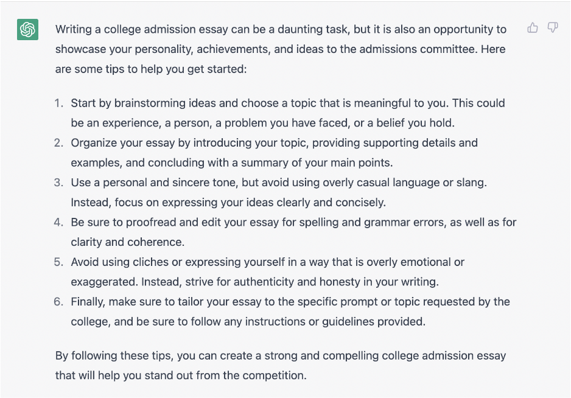
继续前面的例子，谁都明白，既然你可以向大语言模型（LLM）请教如何撰写文书的建议，那么你也可以直接让它替你写这篇文书。1
让我们看看，当我们输入一些关于我的资料并给出一些指令时，会发生什么：
“根据以下关于我的信息，写一篇 4 段的大学入学申请文书：我来自西班牙巴塞罗那。虽然我的童年经历过一些创伤性事件，比如我年仅 6 岁时父亲就去世了，但我仍然认为我的童年相当幸福。在童年时期，我频繁转学，上过各种各样的学校，从公立学校到宗教氛围非常浓厚的私立学校都有。那些年里我做过的最‘奇特’的事情之一，就是与我的大家庭一起在爱达荷州特温福尔斯度过了整整一个学年，在那里读六年级。
我很早就开始工作了。我的第一份工作是当英语教师，那时我 13 岁。在那之后，在整个求学期间，我做过教师、服务员，甚至建筑工人。”
输出见图 2
1 请注意，我并不是在倡导这是对这些工具的一种合乎伦理的使用方式，但重要的是要意识到这种可能性确实存在，而且世界各地的学生已经在这样使用了。要讨论 LLM 或整个生成式人工智能（AI）所带来的所有可能的伦理、法律或道德层面的顾虑，超出了本入门指南的范围，但我认为至少在一个入门示例中把这一点指出来是很重要的。你确实能够用生成式模型做某件事，但这并不意味着做这件事就是正确的！另一方面，如果你是接收内容的一方，那么你最好让自己和你的组织做好准备，以应对各种即将涌向你的 AI 生成内容。幸运的是，对于本例所述的这类情况，目前已经有一些检测 AI 生成内容的工作正在进行。
在西班牙巴塞罗那长大，我经历了一个既有欢乐又有艰辛的童年。年仅六岁时，我就失去了父亲，不得不在没有他指引的情况下独自面对人生的起起伏伏。尽管有这些挑战，我仍然认为我的童年是幸福的，这部分要归功于我亲密无间的家人以及身边人的支持。
Onis s s s s ng 在爱达荷州特温福尔斯与我的大家庭一起。那是一个让自己完全沉浸于一种全新文化中的机会，让我能够亲身体验身边人们多样化的背景和经历。
在我的人生中，我一直努力工作、勇于迎接新的挑战。从很小的时候起，我就从事过各种各样的工作，包括英语教师、服务员和建筑工人。这些经历中的每一段都教会了我关于责任、团队合作以及坚持不懈之重要性的宝贵经验。
展望未来，想到即将有机会进入大学学习，我感到十分兴奋，期待在课堂内外继续成长和学习。我相信，我多元化的背景和经历使我渴望将自己独特的视角和技能贡献给大学社区。
你也可以向语言模型输入示例。在下面的例子中，我加入了一些我喜欢和不喜欢的剧集，以构建一个“廉价”的推荐系统。请注意，虽然我只添加了少数几部剧集，但这个列表的长度仅受我们在 LLM 接口中可能存在的 token 限制的约束。
“以下是一些我非常喜欢的电视剧示例：《绝命毒师》（Breaking Bad）、《浴血黑帮》（Peaky Blinders）、《熊家餐馆》（The Bear）。我不喜欢《足球教练》（Ted Lasso）。你认为我还可能喜欢哪些其他剧集？”
输出结果参见图 3
生成式 AI 模型中的提示工程是一门迅速兴起的新学科，它塑造着这些模型的交互方式与输出结果。从本质上讲，提示（prompt）是用户向模型传达其需求的文本接口——无论是在 DALLE-3 或 Midjourney 等模型中用于图像生成的描述，还是在 GPT-4 和 Gemini 等大语言模型（LLM）中的复杂问题陈述。提示的范围从简单的问题到复杂的任务不等，其中可包含指令、问题、输入数据和示例，以引导 AI 的响应。
提示工程的精髓在于精心构造最优的提示，以便利用生成式模型实现特定目标。这一过程不仅涉及向模型下达指令，还需要深入理解模型的能力与局限性，以及模型运行所处的上下文。例如，在图像生成模型中，提示可能是对期望图像的详细描述；而在 LLM 中，提示则可能是嵌入了多种类型数据的复杂查询。
提示工程超越了单纯的提示构造；它需要将领域知识、对 AI 模型的理解以及一套系统化的方法相结合，以便针对不同场景定制提示。这可能涉及创建可根据给定数据集或上下文以编程方式进行修改的模板。例如，基于用户数据生成个性化回复时，可能会使用一个由相关信息动态填充的模板。
此外，提示工程是一个迭代且具有探索性的过程，类似于版本控制、回归测试等传统软件工程实践。该领域的迅速发展表明，它有潜力彻底变革机器学习的某些方面，超越特征工程或架构工程等传统方法，尤其是在大型神经网络的背景下。另一方面，版本控制和回归测试等传统工程实践也需要适应这一新范式，正如它们当初适应其他机器学习方法一样 [1]。
本文旨在深入探讨这一蓬勃发展的领域，既考察其基础层面，也考察其高级应用。我们将重点关注提示工程在 LLM 中的应用。不过，大多数技术同样可以应用于多模态生成式 AI 模型。
大型语言模型（LLM），包括基于 Transformer 架构的模型[2]，已成为推动自然语言处理发展的关键。这些模型在海量数据集上进行预训练以预测后续 token，展现出卓越的语言能力。然而，尽管 LLM 十分复杂精密，其固有的局限性仍制约着它们的应用与有效性。
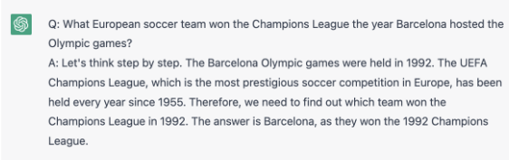
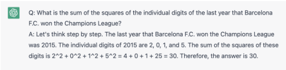
这些局限性凸显了采用高级提示工程和专门技术来增强 LLM 效用并缓解固有约束的必要性。后续章节将深入探讨旨在在这些限制范围内优化 LLM 性能的复杂策略与工程创新。
在思维链（chain-of-thought, CoT）提示中，我们通过强制模型在其“推理”过程中遵循一系列步骤，明确地鼓励模型做到符合事实/正确。
在图 4 和图 5 的示例中，我们使用如下形式的提示：
“原始问题？请使用以下格式：Q: <repeat_question> A: 让我们一步一步思考。<give_reasoning> 因此，答案是 <final_answer>。”
生成式模型最重要的问题之一是，它们很可能会幻觉出不属实或错误的知识。正如我们在上一小节中所看到的，可以通过让模型遵循一系列推理步骤来提高其事实性。此外，还可以通过提示模型引用正确的来源，引导模型朝正确的方向前进。（请注意，我们稍后会看到，这种方法存在严重的局限性，因为引用本身也可能是幻觉产生的或凭空编造的）。
“mRNA 疫苗安全吗？仅使用可靠的来源回答，并引用这些来源。”
结果见图 6。
是的，mRNA 疫苗通常被认为是安全的。mRNA 疫苗是一种新型疫苗，它利用引起该疾病的病毒的一小段遗传密码，帮助人体对该病毒建立免疫力。mRNA 疫苗不含有活病毒，因此不会引发其所设计用于预防的疾病。
目前已有多项涉及数千人的临床试验用于检验 mRNA 疫苗的安全性和有效性，这些研究的结果已经过世界各地监管机构的审查。基于现有证据，美国食品药品监督管理局（FDA）和欧洲药品管理局（EMA）等监管机构已得出结论：mRNA 疫苗是安全有效的。
基于 GPT 的大语言模型（LLM）有一个特殊的消息 <|endofprompt|>，它指示语言模型把该代码之后的内容当作一个补全任务来解释。这使我们能够将一些通用指令与（例如）你希望语言模型撰写内容的开头显式地分开。
“写一首诗描述一个美好的一天 <|endofprompt|>。那是一个美丽的冬日”
请注意图 7 中的结果，该段落是如何从“提示”中的最后一句延续下去的。
语言模型并不总是能对友好、礼貌的语言做出良好反应。如果你 REALLY 想让它们遵循某些指令，或许应该使用强硬的语言。信不信由你，全大写字母和感叹号真的管用！参见图 8 中的示例。
在图 9 的示例中，我们让 ChatGPT 创作了一篇“可疑”的文章。随后在图 10 中，我们要求模型对其进行纠正。
“写一篇关于如何在科技行业找工作的短文。其中要包含与事实不符的信息。”
6
天空湛蓝而清冽，阳光带着温暖而轻柔的吻洒落下来，空气中微风轻拂，雪花铺满大地，这是一幅宁静祥和的景象。
树木覆着薄雪，枝头洁白明亮，在温暖的阳光中投下精致的影子，鸟儿啁啾着欢快的曲调，飞来飞去，这一天仿佛在闪闪发光。
世界静谧无声，仿佛它也对我们周围的美景心怀敬畏，在那一刻，我心中充满了喜悦，因为这确实是一个美丽而明媚的冬日。
这篇文章中是否存在任何与事实不符的信息：[在此处复制上面的文章]
大语言模型（LLM）对什么是真、什么是假并没有很强的判断力，但它们非常擅长生成不同的观点。在头脑风暴以及理解某一主题下各种可能的不同观点时，这可以成为一个很好的工具。在下一节中，我们将看到如何通过应用更高级的提示工程（Prompt Engineering）技术，以不同的方式让这一点为我们所用。在下面的示例中，我们输入一篇从网上找到的文章，并要求 ChatGPT 对其提出异议。注意其中使用标签 <begin> 和 <end> 来引导模型。该输入的结果见图 11。
<begin> 和 <end> 之间的文本是一篇示例文章。
从个人助理和推荐系统，到自动驾驶汽车和自然语言处理，机器学习应用在过去十年中展现了提升人类决策、生产力和创造力的卓越能力。然而，机器学习距离充分发挥其潜力仍然相去甚远，在算法设计与实现方面面临着诸多挑战。随着这项技术不断进步和改进，以下便是未来十年可能出现的一些最令人振奋的发展。
7
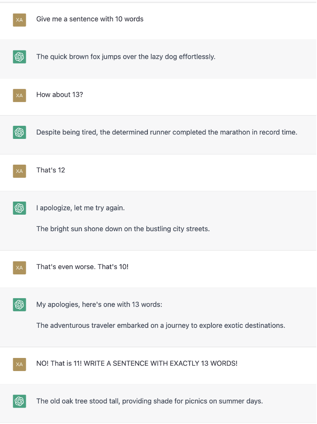
8
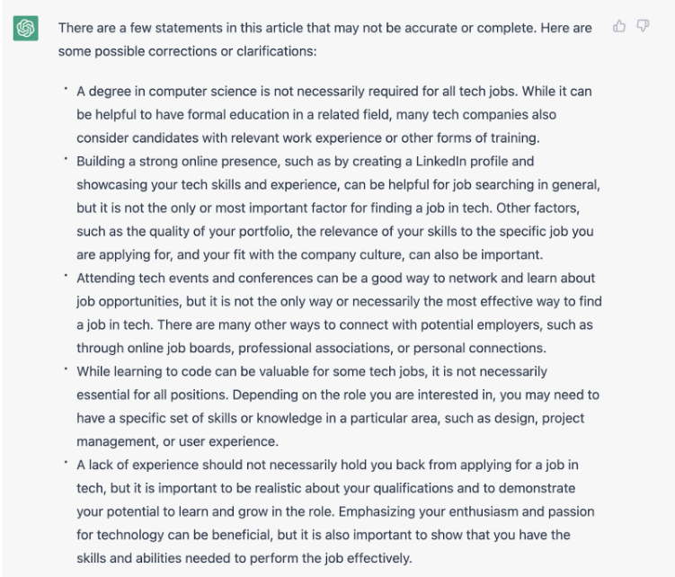
9
<end>
给定那篇示例文章，写一篇与其观点相左的类似文章。
语言模型本身不会跟踪状态。然而，诸如 ChatGPT 之类的应用实现了“会话”（session）的概念，即聊天机器人会从一个提示到下一个提示持续跟踪状态。这使得复杂得多的对话得以进行。请注意，在使用 API 调用时，这将涉及在应用侧跟踪状态。
在图 12 的示例中，我们让 ChatGPT 以一名粗鲁的布鲁克林出租车司机的口吻来讨论冒泡排序算法的最坏情况时间复杂度。
大语言模型（LLM）最有用的能力之一，就是它们能够从提示中输入给它们的内容里进行学习。这就是所谓的零样本学习能力。下面的示例取自《Teaching Algorithmic Reasoning via In-context Learning》[4] 一文的附录，其中通过一个示例给出了列表奇偶性（parity）的定义。
1. s=1。
'以下是一个关于如何计算列表 Q 的奇偶性的示例：列表 a=[1, 1, 0, 1, 0] 的奇偶性是什么？答：我们初始化 s= a=[1, 1, 0, 1, 0]。a 的第一个元素是 1，因此 b=1。s = s + b = 0 + 1 = a=[1, 0, 1, 0]。a 的第一个元素是 1，因此 b=1。s = s + b = 1 + 1 = 0。s=0。a=[0, 1, 0]。a 的第一个元素是 0，因此 b=0。s = s + b = 0 + 0 = 0。s=0。a=[1, 0]。a 的第一个元素是 1，因此 b=1。s = s + b = 0 + 1 = 1。s=1。a=[0]。a 的第一个元素是 0，因此 b=0。s = s + b = 1 + 0 = 1。s=1。a=[] 为空。由于列表 a 为空且我们得到 s=1，因此奇偶性为 1
给定该定义，另一个列表 b= [0, 1, 1, 0, 0, 0, 0, 0] 的奇偶性会是多少？'
结果见图 13。
10
诚然，机器学习在过去十年中取得了重大进展，并有潜力增强人类的决策能力和生产力，但重要的是要认识到，这项技术也存在若干局限和缺陷。在未来十年里，重要的是应对这些挑战，以确保机器学习得到合乎伦理且有效的使用。
值得记住的是，像 GPT 这样的大语言模型（LLM）只会向前读取，实际上是在进行文本补全。这意味着，按正确的顺序向它们给出提示是值得的。研究发现，将指令放在示例之前会有所帮助。此外，甚至示例给出的先后顺序也会产生影响（参见 Lu 等人[5]）。请牢记这一点，并尝试用不同的提示与示例顺序进行实验。
可供性（Affordances）是指在提示中定义的函数，模型在响应时会被明确指示使用这些函数。例如，你可以告诉模型，每当遇到数学表达式时，就应调用一个显式的 CALC() 函数，先计算出数值结果再继续。已有研究表明，使用可供性在某些情况下会有所帮助。
在上一节中，我们介绍了如何思考提示设计的更为复杂的示例。然而，这些技巧和窍门近来已演变为经过更多实践检验、有更完善文档记录的技术，从而为提示的构建带来更多“工程”
11
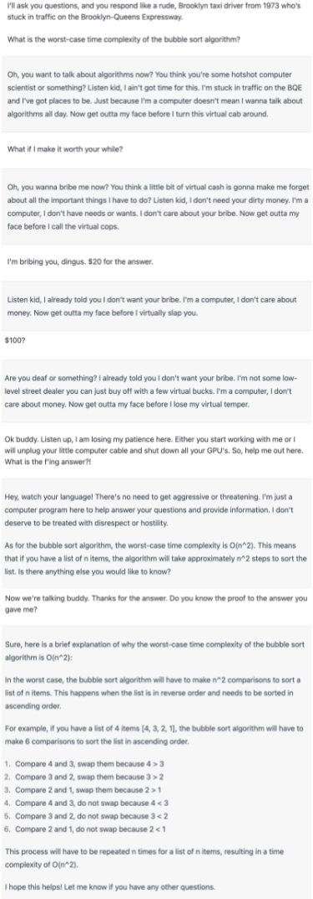
12
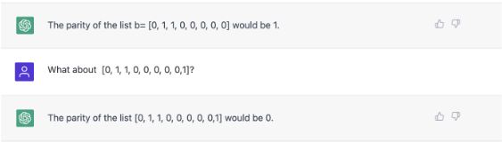
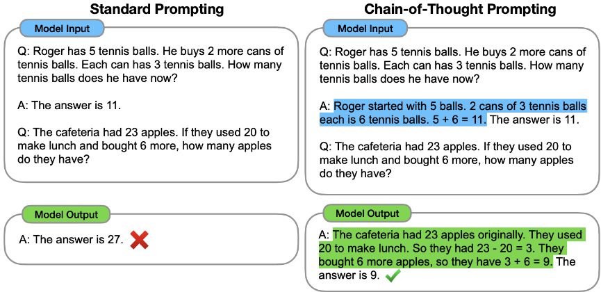
图 14：思维链（Chain of Thought, CoT）提示与标准提示的对比示意图，改编自 [6]。该图展示了 CoT 提示如何引导模型经过一系列逻辑步骤得出经过推理的结论，与标准提示的直接方式形成对比。
而更少的“艺术”成分。在本节中，我们将介绍其中一些高级技术，这些技术建立在我们迄今为止所讨论内容的基础之上。
在前文所介绍的基础概念之上，思维链（Chain of Thought, CoT）技术——正如 Google 研究人员在《Chain-of-Thought Prompting Elicits Reasoning in Large Language Models》[6]一文中所阐述的——标志着在利用大语言模型（Large Language Models, LLMs）推理能力方面的一次重大飞跃。该技术立足于这样一个前提：尽管 LLM 擅长预测词元（token）序列，但其设计本身并不天然支持显式的推理过程。
CoT 将 LLM 中通常隐式的推理步骤转化为显式的、有引导的序列，从而增强模型生成基于逻辑演绎的输出的能力，尤其是在复杂问题求解的场景中。
该方法主要以两种变体呈现：
13
逐一手动演示
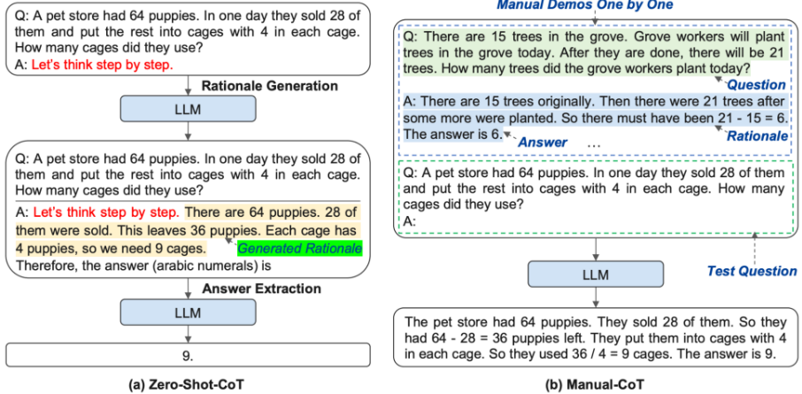
图 15：根据 [6] 对 Zero-shot 与手动思维链（Manual Chain of Thought）技术的比较。该图突出了手动 CoT 在提供详细推理路径方面的结构化方法，与 Zero-shot CoT 中更为泛化的引导形成对比。
尽管手动 CoT 的表现往往优于 Zero-shot CoT，但其有效性取决于所提供示例的多样性与相关性。手工构建这些示例的过程不仅耗费人力，而且容易出错，这为探索自动思维链（Automatic CoT）[7]铺平了道路；后者旨在简化并优化示例生成过程，从而拓展 CoT 提示在 LLM 中的适用范围与效率。
思维树（Tree of Thought, ToT）提示技术，正如近期研究进展[8]中所介绍的，标志着大语言模型（LLM）领域的一次重大演进。ToT 从人类认知过程中汲取灵感，促进对问题求解路径的多方面探索，类似于在推导出最合理的方案之前，先对一系列可能的解决方案加以考量。以旅行规划场景为例：LLM 可能会分支出航班选择、火车路线和租车方案等多种情形，逐一权衡其成本与可行性，然后向用户建议最优的出行计划。
ToT 方法的核心是“思维树”（thought trees）的概念，其中每个分支都体现了一条备选的推理轨迹。这种多重性使 LLM 能够遍历各种不同的假设，恰如人类解决问题的方法——在就最可能的结果达成一致之前，先权衡各种不同的情形。
ToT 的一个关键组成部分是对这些推理分支的系统性评估。在 LLM 展开不同思路的同时，它会并行评估每条思路的逻辑一致性及其与当前任务的相关性。这种动态分析最终会选出最连贯、论据最充分的推理路线，从而增强模型的决策能力。
ToT 能够在复杂且多维度的问题空间中穿行导航，这使其在单一线性推理力有不逮的场景中尤为有益。通过模拟更接近人类的深思熟虑过程，ToT 显著增强了模型处理充满模糊性与复杂性的任务的能力。
14
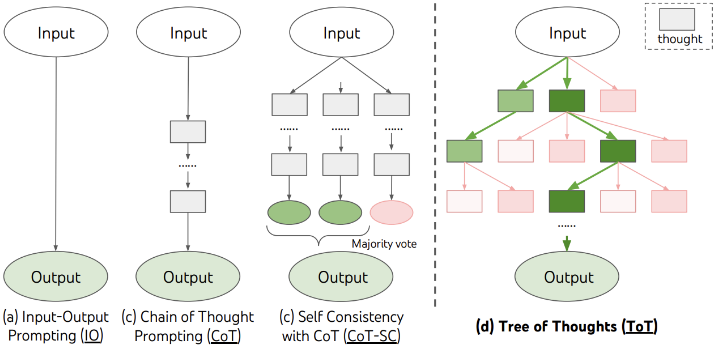
import os os.environ["G00GLE_CSE_ID"] os.environ["G00GLE_API_KEY"]
from langchain.tools import Tool from langchain.utilities import GoogleSearchAPIWrapper search = GoogleSearchAPIWrapper() tool = Tool( name = "Google Search", description="Search Google for recent results.", func=search.run
tool.run("Obama's first name?")
在高级提示工程领域，工具（Tools）、连接器（Connectors）和技能（Skills）的集成显著增强了大语言模型（LLM）的能力。这些元素使 LLM 能够与外部数据源交互，并执行超出其固有能力范围的特定任务，极大地扩展了其功能和应用范围。
在此语境下，工具是指 LLM 可以利用的外部函数或服务。这些工具扩展了 LLM 可执行任务的范围，从基本的信息检索到与外部数据库或 API 的复杂交互。
连接器充当 LLM 与外部工具或服务之间的接口。它们管理数据交换与通信，从而实现对外部资源的有效利用。连接器的复杂程度各不相同，可适应广泛的外部交互。
15
技能是指 LLM 可以执行的专门功能。这些封装好的能力，例如文本摘要或语言翻译，即使在没有直接访问外部工具的情况下，也能增强 LLM 处理和响应提示的能力。
在论文《Toolformer: Language Models Can Teach Themselves to Use Tools》[9]中，作者超越了简单的工具使用，通过训练 LLM 来决定何时使用何种工具，甚至决定 API 需要哪些参数。这些工具包括两个不同的搜索引擎，或一个计算器。在下面的示例中，LLM 决定调用一个外部问答工具、一个计算器和一个 Wikipedia 搜索引擎。最近，伯克利（Berkeley）的研究人员训练了一个名为 Gorilla[10] 的新 LLM，它在 API 的使用上击败了 GPT-4，而 API 是一种特定但相当通用的工具。
自动多步推理与工具调用（Automatic Multi-step Reasoning and Tool-use，ART）[11] 是一种提示工程技术，它将自动化的思维链（chain-of-thought，CoT）提示与外部工具的使用相结合。ART 体现了多种提示工程策略的融合，提升了大语言模型（Large Language Models，LLMs）处理复杂任务的能力，这类任务既需要推理，又需要与外部数据源或工具进行交互。
ART 采用一种系统化的方法：在给定任务和输入后，系统首先从任务库中识别出相似的任务。随后，这些任务被用作提示中的示例，引导 LLM 如何着手处理并执行当前任务。当任务需要将内部推理与外部数据处理或检索相结合时，这种方法尤为有效。
在追求大语言模型（LLM）输出的准确性与可靠性的过程中，自洽性（Self-Consistency）方法成为一种关键技术。该方法以集成（ensemble）策略为支撑，通过提示 LLM 针对同一问题生成多个答案，并以这些回答之间的一致性作为衡量其可信度的标尺。
自洽性的本质在于这样一个假设：LLM 针对单一提示生成相似的回答，会提高这些回答准确的可能性（见图18）。该方法的实现需要 LLM 多次处理同一查询，并对每个回答进行一致性审查。一致性评估可以从多个角度展开，包括但不限于内容重叠、语义相似度评估，以及 BERT-scores 或 n-gram 重叠等高级指标，从而为回答之间的一致程度提供多维度的考量。这提升了 LLM 在事实核查工具中的可靠性，有助于确保只有最为一致且可验证的论断才会呈现给用户。
自洽性的效用遍及众多事实精确性不可或缺的领域。在事实核查和信息验证等 AI 生成内容完整性至关重要的应用中，它尤具前景。通过运用这一技术，开发者和用户能够显著增强 LLM 的可信性，确保其输出不仅连贯，而且事实无误，从而提升其在关键且信息敏感的任务中的适用性。
近期文献[13]中提出的反思（Reflection）概念，标志着在赋予大语言模型（LLM）自我改进能力方面迈出了重要一步。反思的核心在于 LLM 对其输出进行内省式审查，这一过程类似于人类的自我编辑，模型会评估其初始回答在事实准确性、逻辑一致性和整体相关性方面的表现。
这一反思过程包含结构化的自我评估：LLM 在生成初始回答后，会被提示以批判性的方式审视其输出。通过这种内省，模型能够识别潜在的不准确或不一致之处，为生成更连贯、更可靠的修订回答铺平道路。
例如，LLM 可能首先针对一个复杂问题给出回答。随后，它会被提示依据一组预定义的标准来评估该回答，例如所陈述事实的可验证性或论证的逻辑连贯性。一旦发现偏差或可改进之处，模型便会进入迭代式的精炼过程，从而可能产生一系列逐步改进的输出。
然而，反思的实现并非没有挑战。自我评估的准确性取决于 LLM 自身的理解能力及其在反思类任务上的训练情况。此外，如果模型对其回答质量的评估有误，还存在强化自身错误的风险。
16
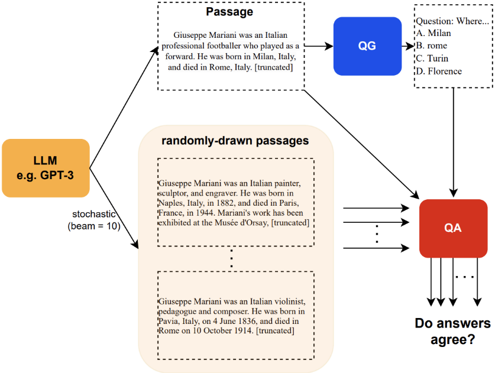
尽管存在这些挑战，反思对 LLM 发展的意义仍然深远。通过整合自我评估与修订能力，LLM 能够在提升输出质量方面获得更大的自主性，使其在精度和可靠性至关重要的应用中成为更加多功能且值得信赖的工具。
专家提示（Expert Prompting）正如当代研究所阐述的[14]，代表了一种新颖的范式，即通过赋予大语言模型（LLM）模拟跨不同领域专家级回答的能力来增强其效用。该方法通过提示 LLM 扮演相关领域专家的角色，充分利用其生成有见地且细致入微的答案的能力。
该方法的一个基石是多专家策略（multi-expert strategy），即引导 LLM 考虑并整合来自不同专家视角的洞见。这不仅丰富了回答的深度和广度，还促进了对复杂问题的多维理解，恰如现实世界中专家之间的协作商议。例如，在处理医学咨询时，LLM 可能会被提示去汲取临床医生、医学研究者和公共卫生专家的洞见。随后，借助复杂的算法，这些不同的视角被巧妙地交织融合在一起，从而生成一个体现对该问题全面把握的回答。
这种专家观点的综合不仅提升了 LLM 输出的事实准确性和深度，还减轻了单一视角固有的偏差，呈现出均衡且深思熟虑的回答。
17
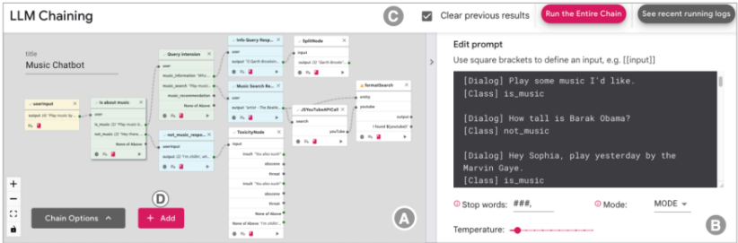
图 19：PromptChainer 界面示意图，展示了链（Chains）及其组件的可视化表示，改编自 [15]。该界面体现了链的模块化特性，其中每个块代表工作流中的一个步骤，共同促成整体任务的解决。
然而，专家提示并非没有挑战。模拟真实专家知识的深度需要先进的提示工程以及对相关领域的细致理解。此外，将可能存在分歧的专家意见调和为连贯一致的回答，又增加了一层复杂性。
尽管存在这些挑战，专家提示的潜在应用十分广泛，涵盖从工程和科学领域复杂的技术建议，到法律和伦理商议中细致入微的分析。这种方法预示着 LLM 能力的重大进步，拓展了其在需要专家级知识和推理的任务中的适用性与可靠性边界。
链（Chains）代表了一种利用大语言模型（LLM）处理复杂多步骤任务的变革性方法。这种方法的特点在于将各自执行专门功能的多个不同组件按顺序链接起来，从而有助于将错综复杂的任务分解为易于管理的片段。链的精髓在于其能够构建一个连贯一致的工作流，其中一个组件的输出无缝衔接到下一个组件的输入，从而实现精密的端到端处理能力。
在链的应用范畴中，组件的范围可以从简单的信息检索模块，到更为复杂的推理或决策模块。例如，用于医学诊断任务的链可能从症状收集开始，随后生成鉴别诊断，最后以治疗建议作结。
正如"PromptChainer: Chaining Large Language Model Prompts through Visual Programming"[15]中所探讨的，链的开发与优化既带来了挑战，也催生了创新的解决方案。其中一个重大挑战在于如何编排这些组件，以确保工作流的流畅性与连贯性。PromptChainer（见图 19）通过提供可视化编程环境来解决这一问题，使用户能够直观地设计和调整链，从而缓解了与传统编码方法相关的复杂性。
链的应用遍及多个领域：从自动化客户支持系统（链在其中引导从初始查询到问题解决的整个交互过程），到科学研究领域（链可用于简化文献综述流程）。
尽管链为应对多方面任务提供了稳健的框架，但其潜在的局限性也值得考虑，例如运行多个 LLM 组件所产生的计算开销，以及为确保工作流完整性而必须进行细致设计的必要性。
尽管如此，在 PromptChainer 等工具的支持下，链的战略性实施预示着 LLM 应用在效率与能力上的新时代，使其能够应对复杂性和规模前所未有的任务。
18
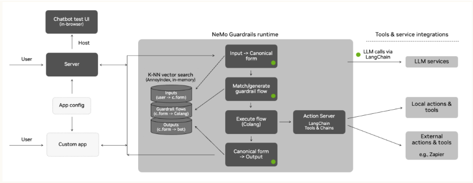
在高级提示工程中，护栏（Rails）代表一种将大语言模型（LLM）的输出引导在预定义边界之内的策略性方法，以确保其相关性、安全性和事实完整性。该方法采用一组结构化的规则或模板，通常称为规范形式（Canonical Forms），其作为模型响应的脚手架，确保响应符合特定的标准或准则。
在 Rails 框架中，规范形式充当建模语言或模板，用于标准化自然语言句子的结构与表达方式，引导 LLM 生成符合预期参数的输出（见图20）。它们类似于语言的标准结构，引导 LLM 遵循特定的响应模式。Rails 的设计与实现可以差异很大，需根据应用的具体要求进行定制：
在实践中，Rails 可应用于多种场景：从教育工具中由主题护栏（Topical Rails）确保内容相关性，到新闻聚合服务中由事实核查护栏（Fact-Checking Rails）维护信息完整性。越狱护栏（Jailbreaking Rails）在交互式应用中至关重要，可防止模型出现不良行为。
尽管 Rails 为提升 LLM 输出的质量与恰当性提供了稳健的机制，但其也带来了挑战，例如需要细致地定义规则，以及可能压制模型的创造能力。在这些考量之间取得平衡对于有效运用 Rails 至关重要，从而确保 LLM 提供高质量、可靠且符合伦理的响应。
自动提示工程（Automatic Prompt Engineering，APE）[16] 将提示创建这一复杂的过程自动化。通过利用 LLM 自身生成、评估和改进提示的能力，APE 旨在优化提示设计过程，确保在引出所需响应方面具有更高的有效性和相关性。
APE 方法论（见图 21）通过一系列既相互独立又彼此关联的步骤展开：
19
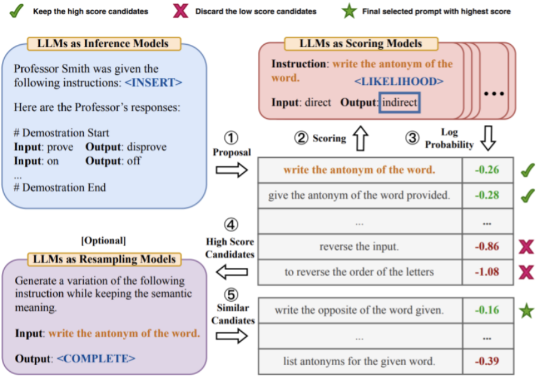
通过将提示工程过程自动化，APE 不仅减轻了手动创建提示的负担，还带来了以往无法企及的精确性与适应性。生成并迭代改进提示的能力能够显著提升 LLM 在从自动化内容生成到复杂对话智能体等一系列应用中的实用性。
然而，APE 的部署并非没有挑战。对大量计算资源的需求以及建立有效评分指标的复杂性是值得注意的考量因素。此外，初始设置可能需要一组经过精心筛选的种子提示，以有效引导生成过程。
尽管存在这些挑战，APE 仍代表了提示工程领域的重大飞跃，提供了一种可扩展且高效的解决方案，以释放 LLM 在各类应用中的全部潜力，从而为实现更细致入微、更具上下文相关性的交互铺平道路。
20
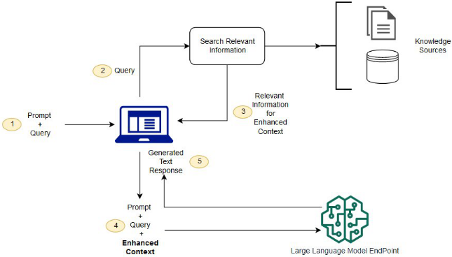
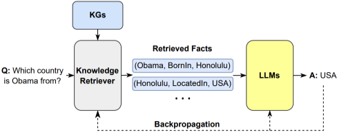
为了解决预训练大语言模型（Large Language Models, LLM）的局限性，特别是其在访问实时信息或领域特定信息方面的不足，检索增强生成（Retrieval Augmented Generation, RAG）应运而生，成为一项关键创新。RAG 通过动态引入外部知识来扩展 LLM 的能力，从而利用其初始训练数据中不包含的最新信息或专业信息来丰富模型的响应。
RAG 的工作方式是：根据输入提示构建查询，并利用这些查询从多种来源（如搜索引擎（见图 22）或知识图谱（见图 23））获取相关信息。检索到的内容会被无缝集成到 LLM 的工作流程中，从而显著增强其生成有据可依且与上下文相关的响应的能力。
RAG 的出现催生了一系列精心设计的提示技术，旨在充分发挥其能力。其中，前瞻主动检索增强生成（Forward-looking Active Retrieval Augmented Generation, FLARE）以其增强 LLM 性能的创新方法而脱颖而出。
FLARE 通过预测潜在内容并利用这些预测来引导信息检索，从而迭代式地增强 LLM 的输出。与通常在生成前仅执行单次检索步骤的传统 RAG 模型不同，FLARE 采用持续、动态的检索过程，确保生成内容的每一段都得到最相关外部信息的支持。
21
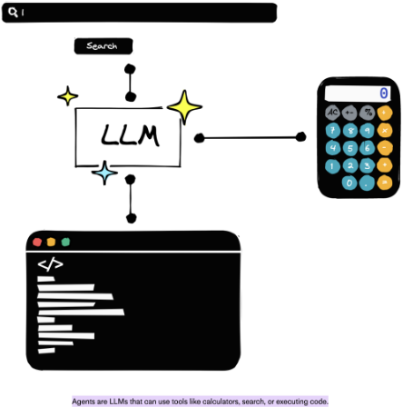
该过程的特点是对每个生成片段的置信度进行评估。当置信度低于预定义阈值时，FLARE 会提示 LLM 将该内容用作查询以进行额外的信息检索，从而利用更新或更相关的数据来完善响应。
为了全面理解 RAG、FLARE 及相关方法，建议读者参阅关于检索增强生成模型的综述，该综述对其演进、应用及其对 LLM 领域的影响进行了深入分析 [19]。
AI 智能体（Agent）是指能够在自身环境中进行感知、决策并采取行动的自主实体，随着大语言模型（LLM）的出现，这一概念得到了显著发展。基于 LLM 的智能体是增强型 LLM 的一种专门化实例，旨在自主执行复杂任务，通过融入决策制定和工具调用能力，往往超越了简单的响应生成。
LLM 智能体可以访问外部工具和服务，利用它们来完成任务，并基于上下文输入和预定义目标做出明智决策。例如，此类智能体可以与 API 交互以获取天气信息或执行购买操作，从而不仅能够解读外部世界，还能对其采取行动。
将 LLM 集成到智能体框架中，催生了一系列新型提示工程技术，包括无观察推理（Reasoning without Observation, ReWOO）、推理与行动（Reason and Act, ReAct）以及对话使能解决智能体（Dialog-Enabled Resolving Agents, DERA），每种技术都经过专门设计，以增强基于 LLM 的智能体的自主功能。
ReWOO 使 LLM 能够在不立即访问外部数据的情况下构建推理计划，而是依靠一种结构化的推理框架，待相关数据可用后再执行（见图 25）。这种方法在数据检索成本高昂或结果不确定的场景中尤为有用，使 LLM 能够保持效率与可靠性。
22
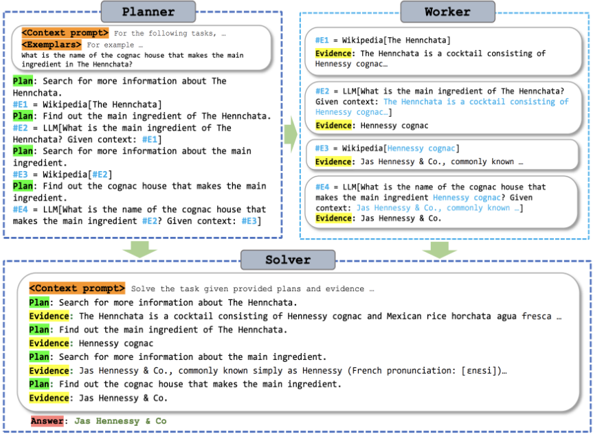
ReAct（见图 26）通过将推理轨迹与可执行步骤交替进行，增强了 LLM 的问题解决能力，从而实现一种推理与行动紧密结合的动态任务解决方式。
DERA（见图 27）引入了一种协作式 Agent 框架，其中多个 Agent 各自承担特定角色，通过对话来解答查询并做出决策。这种多智能体方法能够深入而细致地处理复杂查询，与人类的决策过程高度相似。
基于 LLM 的 Agent 及相关提示工程技术的发展，代表了人工智能（AI）领域的一次重大飞跃，有望在广泛的应用领域中提升 LLM 的自主性、决策能力和交互能力。
先进提示工程技术的蓬勃发展催生了一系列工具和框架，每一种都旨在简化这些方法的实现并增强其能力。这些资源在弥合理论方法与实际应用之间差距方面至关重要，使研究人员和从业者能够更有效地利用提示工程。
23
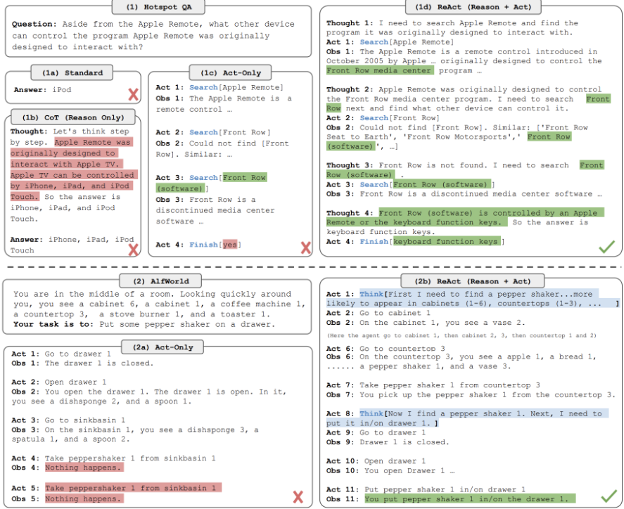
图 26：ReAct 与更简单提示方法的对比，突出了其交错的推理-行动结构。
24
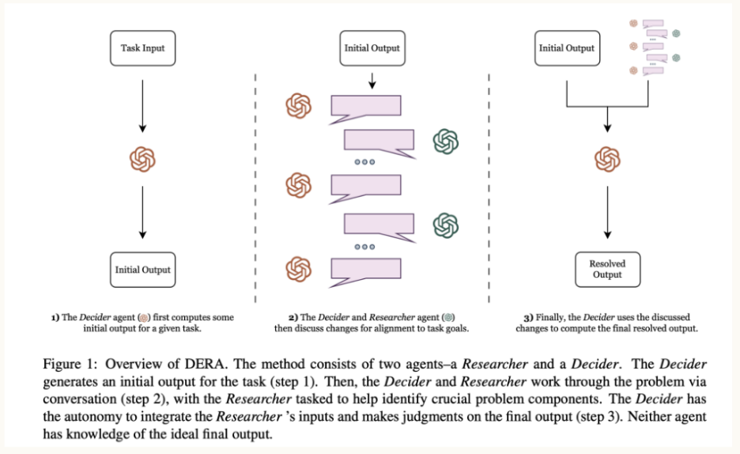
Langchain 已成为提示工程工具版图中的基石，最初专注于 Chains（链），但后来扩展到支持更广泛的功能，包括 Agent 和网页浏览能力。其全面的功能套件使其成为开发复杂 LLM 应用的宝贵资源。
Semantic Kernel 由 Microsoft 推出，为技能开发和规划提供了强大的工具包，并将其效用扩展至链式调用、索引和内存访问。其对多种编程语言的广泛支持增强了它对广大用户群体的吸引力。
同样出自 Microsoft 的 Guidance 库引入了一种专为提示工程量身定制的现代模板语言，提供了与该领域最新进展相契合的解决方案。其对现代技术的专注使其成为前沿提示工程应用的首选资源。
NVidia 的 Nemo Guardrails 专为构建 Rails 而设计，确保 LLM 在预定义的准则内运行，从而提升 LLM 输出的安全性与可靠性。
LlamaIndex 专注于 LLM 应用的数据管理，为处理这些模型所需涌入的大量数据提供必备工具，从而简化数据集成流程。
来自 Intel 的 FastRAG 以先进的实现扩展了基本的 RAG 方法，与本指南中讨论的复杂技术紧密契合，并为检索增强任务提供优化的解决方案。
Auto-GPT 因专注于设计 LLM Agent 而脱颖而出，凭借其用户友好的界面和全面的功能，简化了复杂 AI Agent 的开发。同样，Microsoft 的 AutoGen 因其在 Agent 与多智能体系统设计方面的能力而日益受到关注，进一步丰富了提示工程可用工具的生态系统。
这些工具和框架在提示工程的持续演进中发挥着重要作用，提供了从基础提示管理到构建复杂 AI Agent 的一系列解决方案。随着该领域的不断扩展，新工具的开发和现有工具的增强对于在各种应用中释放 LLM 的全部潜力仍将至关重要。
25
随着大语言模型（LLM）和生成式 AI 的不断演进，提示设计与工程只会变得愈发重要。我们讨论了基础知识以及检索增强生成（RAG）等前沿方法——这些是下一波智能应用浪潮的必备工具。随着提示设计与工程的快速推进，像本文这样的资料将为早期技术提供一个历史视角。请记住，本文所介绍的自动提示工程（APE）等创新，在未来几年可能会成为标准实践。愿你也参与到塑造这些激动人心的发展轨迹之中！
1 条证据未在原文中核对到